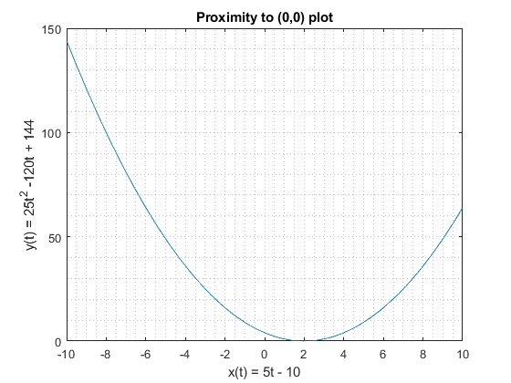
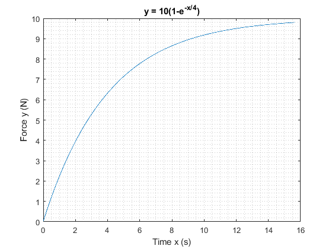

ENGR 133, Lab 05
Authored by: Andres Choque Authored on: 10/19/2020
Contents
Problem 1
clear close all clc % Problem Presentation %{ Write a program that accepts a year and determines whether the year is a leap year . Use the mod function. The output should be the variable extra_day, which should be 1 if the year is a leap year and 0 otherwise. The rules for determining leap years in the Gregorian calendar are as follows: 1. All years evenly divisible by 400 are leap years. 2. Years evenly divisible by 100 but not by 400 are not leap years. 3. Years divisible by 4 but not by 100 are leap years 4. All other years are not leap years. For example, the years 1800, 1900, 2100, 2300, and 2500 are not leap years, but 2400 is a leap year. %} % Initialize variables year = 2000; %input('Enter the year (4 digits): '); % asks for input extra_day = 0; % Initializes counter variable % Perform Calculations if mod(year,400) == 0 %Performs logical text for rule 1 extra_day = 1; %Changes counter variable if true elseif mod(year,100) == 0 %Performs logical text for rule 2 extra_day = 0; %Changes counter variable if true elseif mod(year,4) == 0 %Perfroms logical text for rule 3 extra_day = 1; %Changes counter variable if true else extra_day = 0; %Changes counter variable if all tests false end if extra_day ==1 output = 'is'; else output = 'is not'; end % Display results fprintf('\nThe year %4.0f %s a leap year.\n\n',year, output)
The year 2000 is a leap year.
Problem 2
clear close all clc % Problem presentation %{ Write a program that uses a for loop to determine the time at which an object is the closest to the origin at (0,0). Determine also the minimum distance. Pseudocode: --Initialize a time vector over the interval of interest. --Initialize vectors for the x and y coordinates over time. --Compute an array of d values for each (x,y) pair. --Find the minimum value of the d vector -- answers the 2nd part --Find the time of the minimum d value -- answers the 1st part --Confirm that our solution is reasonable %} % Initialize variables t = 0:0.01:4; %Initialize time vector x = 5*t - 10; %Initialize x-coordinate vector y = 25*t.^2 - 120*t + 144; %Initialize y-coordinate vector d = sqrt(x.^2 + y.^2); %Initialize distance vector min_dist = Inf; %Initialize placeholder for storing minimum distance % Perfrom Calculations for k = 1:length(t) % loop to look at every value in distance array if d(k) < min_dist; % replace min_dist if lower than previous value min_dist = d(k); % replace min_dist if lower than previous value tmin = t(k); % replace time value end % terminates the branch end % terminates the loop % Display results fprintf('The minimum distance is: %6.4f.\n\n',min_dist) fprintf('It occurs at t = %6.4f seconds.\n\n',tmin) plot(x,y),grid minor % plot the entire time range title('Proximity to (0,0) plot') xlabel('x(t) = 5t - 10'),ylabel('y(t) = 25t^2 -120t + 144')
The minimum distance is: 1.3581. It occurs at t = 2.2300 seconds.
Problem 3
close all clear clc % Problem Presentation %{ We are given a function describing force as a function of time and are about to create a plot over an interval defined by an undefined upper bound. %} % Initialize variables x = 0; y = 0; % x represents time, y represents force k = 0; % k is the loop counter % Perform calculations while y < 9.8 % the upper limit of force is used as a condition k = k+1; % loop counter is incremented x = x+0.01; % x variable is incremented y(k) = 10*(1-exp(-x/4)); % new y array element is computed end xmax = x; %upper limit of the set t = 0:0.01:xmax; % time array is computed % Display results plot(t,y), grid minor title('y = 10(1-e^{-x/4})') xlabel('Time x (s)') ylabel('Force y (N)')